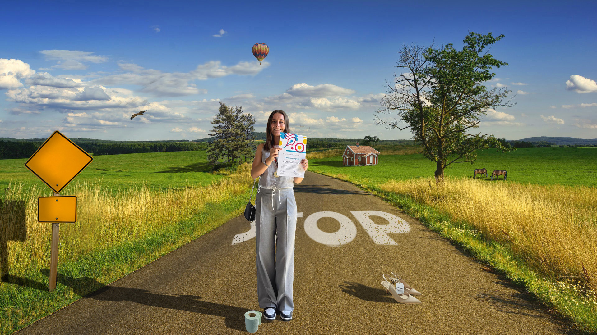

Ovdje možete vidjeti moje vježbe iz kolegija digitalni multimedij 1.
- VJEŽBE-vektorska grafika
Sljedeće vježbe rađene su u programima FontForge i Adobe Illustrator
- Prva vježba-font

- Druga vježba-Bezierova krivulja, precizno crtanje
- Treća vježba-boja, transformacije
- Četvrta vježba-gradijenti, transparencija
- Projektni zadatak 1
- VJEŽBE-piksel grafika
Sljedeće vježbe rađene su u programu Adobe Photoshop
- Peta vježba-retuširanje
- Šesta vježba-koloriranje
- Sedma vježba-fotomontaža
- Projektni zadatak 2

- VJEŽBE-video/web
Sljedeće vježbe rađene su u programu Notepad, Adobe Premier i Adobe Photoshop